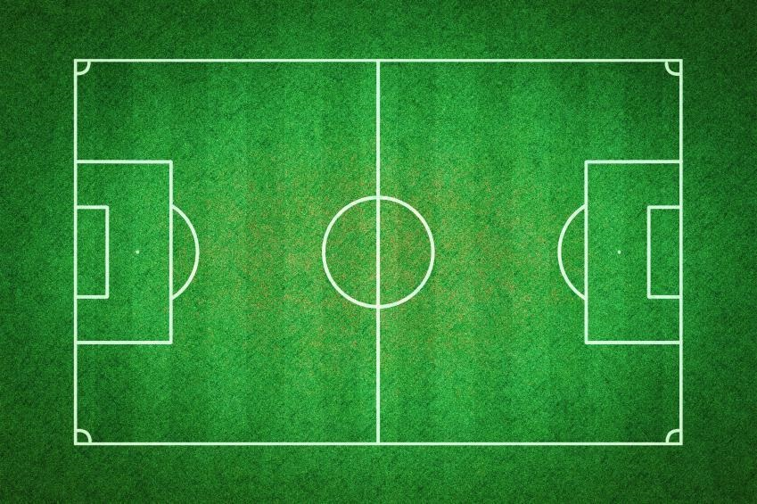

<ol id="breadcrumb" class="breadcrumb">
    <li class="breadcrumb-item active">
        Home
    </li>
</ol>

<div>
    <button id="btnconfig" class="btn btn-info btn-lg" data-toggle="tooltip" title="Configurar Campo">
        <i id="addicon" class="fa fa-cogs" aria-hidden="true"></i>
    </button>
</div>